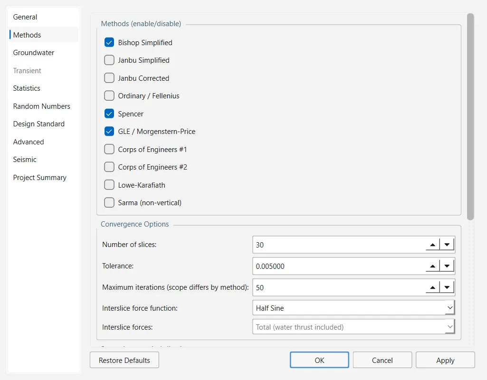

The Project Settings dialog holds the choices that apply to the whole analysis: units and failure direction, the methods of slices and their convergence, the groundwater method, the statistical and seismic analyses, partial factors and a few numerical controls. The settings are saved in the project file, so every project carries its own.
2.1.1Opening the dialog#
Choose Analysis → Project Settings… (Ctrl+J) or the toolbar button. The pages are listed on the left (General, Methods, Groundwater, Transient, Statistics, Random Numbers, Design Standard, Advanced, Seismic and Project Summary) and the buttons at the bottom act on all of them at once:
- OK applies every page and closes the dialog; Apply applies them and leaves it open; Cancel closes it without applying what has not been applied yet.
- Restore Defaults puts the values shown on every page back to their defaults. Nothing is written until Apply or OK, and Cancel discards it. The settings edited elsewhere (the search grid, the slope limits, the back analysis, the transient stages) are kept.
The settings of the slip-surface search (surface type, search method, grid, filters, optimisation) are not in this dialog but in Surfaces → Surface Options… (Section 2.7).

2.1.2General#
| Field | Meaning | Default | Range or choices |
|---|---|---|---|
| Units | Unit system for display and input (Unit systems). The line below the list summarises its units. | Metric, stress as kPa | Six systems |
| Time Units | Unit of time | d | s, min, h, d, mo, yr |
| Permeability Units | Unit of hydraulic conductivity | m/s | m/s, m/day, m/year, cm/s, mm/hour |
| Failure Direction | Which way the sliding mass moves (Failure direction) | Right to Left | Right to Left, Left to Right |
| Max Materials | Largest number of materials the project may hold | 20 | 1 to 500 |
| Max Supports | Largest number of supports | 20 | 0 to 500 |
Max Materials is enforced when properties are imported from another project and by the scripting and agent interfaces, but not by the Define Materials dialog, where materials can be added beyond the limit. Max Supports is stored and not enforced anywhere.
Unit systems#
OGR Slip2D computes and stores every value in the SI system of the second row of Table 2.1.2 (m, kN, kPa, kN/m³). Choosing another system does not change the model: values are converted when they are shown and converted back when they are entered.
| System | Length, force, force per length, stress, unit weight |
|---|---|
| Metric, stress as MPa | m, MN, MN/m, MPa, MN/m³ |
| Metric, stress as kPa | m, kN, kN/m, kPa, kN/m³ |
| Metric, stress as tonnes/m² | m, tonnes, tonnes/m, tonnes/m², tonnes/m³ |
| Imperial, stress as tons/ft² | ft, short tons (2000 lbs), tons/ft, tons/ft², tons/ft³ |
| Imperial, stress as ksf | ft, kips, kips/ft, ksf, kips/ft³ |
| Imperial, stress as psf | ft, lbs, lbs/ft, psf, lbs/ft³ |
The unit system reaches only the Define Materials dialog (unit weights, strength parameters, constant pore pressure and air entry value), the cohesion of the Sarma Data per Vertex dialog, the force reported by the back analysis, and the Newmark displacement shown in the Interpret window and in the PDF report. Coordinates, loads, supports, the water pressure grid and the remaining fields of this dialog are always entered and shown in metres, kN and kPa, whatever system is selected. With the default system there is no difference.
Failure direction#
The equations of every method are written for a mass that slides in a known direction (Section 3.1.5). The page shows a small sketch of the slope and an arrow for the option chosen:
- Right to Left (the default): the sliding mass moves towards decreasing ; the crest is on the right and the toe on the left.
- Left to Right: the mass moves towards increasing ; the crest is on the left and the toe on the right.
Set it before computing whenever the ground of the model falls to the right. The direction also decides the sense in which the horizontal seismic force and the support forces act.
2.1.3Methods#
The upper group, Methods (enable/disable), has one check box per method of slices: Bishop Simplified, Janbu Simplified, Janbu Corrected, Ordinary / Fellenius, Spencer, GLE / Morgenstern-Price, Corps of Engineers #1, Corps of Engineers #2, Lowe-Karafiath and Sarma (non-vertical). A new project has Bishop Simplified and Janbu Simplified enabled. Every enabled method runs its own search, so each has its own critical surface; if none is enabled, Compute runs Bishop Simplified. The methods are described in Section 3.2.
| Field | Meaning | Default | Range or choices |
|---|---|---|---|
| Number of slices | Slices into which each trial surface is divided | 25 | 3 to 500 |
| Tolerance | Convergence tolerance on the factor of safety | 0.005 | 10⁻⁶ to 1 |
| Maximum iterations (scope differs by method) | Iteration budget; what it bounds depends on the method (below) | 50 | 1 to 500 |
| Interslice force function | Shape of in GLE / Morgenstern-Price; enabled only when that method is ticked. runs from 0 at the left end of the surface to 1 at the right. | Half Sine | Half Sine, Constant, Trapezoidal, Clipped Sine |
| Interslice forces | Whether the interslice resultant whose inclination Lowe-Karafiath and Corps of Engineers #1 and #2 prescribe is the total force or the effective force with the water thrust applied separately; enabled only when one of those three is ticked | Total (water thrust included) | Effective (water thrust separated), Total (water thrust included) |
The same Maximum iterations bounds a different loop in each family of methods:
- Bishop Simplified, Janbu Simplified and Janbu Corrected: the iteration on the factor of safety, exactly as set.
- Lowe-Karafiath and Corps of Engineers #1 and #2: the same iteration, but a value below 60 is raised to 60.
- Ordinary / Fellenius: nothing, as the method has no iteration.
- Sarma (non-vertical): nothing; the method has its own iteration settings, in the Sarma (non-vertical slices) group of the same page.
- Spencer and GLE / Morgenstern-Price: the search for the interslice inclination; above 400 it is also the budget of the inner iteration solved at each step of that search, which otherwise keeps its 400 passes.
With Constant as the interslice force function, GLE / Morgenstern-Price is equivalent to Spencer. Total is the convention in which the published values of the three prescribed-inclination methods are given; Effective is the choice for a slope with water standing over it, where the total-force assumption makes the factor of safety depend on the depth of the water (Section 3.3).
Sarma (non-vertical slices)#
Sarma's method divides the sliding mass into wedges whose faces can be inclined (Section 3.2.8). Its factor of safety is the one at which the critical acceleration coefficient of the mass, , computed with the strength of the bases and of the faces divided by , equals the applied horizontal seismic coefficient (zero without a seismic load). The method brackets that root and closes on it by Brent's method, so the Convergence Options above do not reach it: it has its own group, Sarma (non-vertical slices), at the foot of the page. The group is greyed out while Sarma (non-vertical) is not ticked, and the face cohesion and friction angle also while Face strength is not Given c and φ.
| Field | Meaning | Default | Range or choices |
|---|---|---|---|
| Least number of wedges | The boundaries between wedges are the vertices of the surface, its crossings with the water table and with the material contacts, and further divisions up to this number | 25 | 1 to 500 |
| Tolerance on F | Tolerance of the root on the factor of safety | 0.0001 | 10⁻⁸ to 1 |
| Iterations | Iterations allowed for that root; past them the surface has no factor | 75 | 1 to 1000 |
| Face angles | Angle of the faces that no vertex of the surface gives one | Bisector | Bisector, Mean normal, Vertical faces, Optimised, global minimum, Optimised, all surfaces |
| Face strength | Shear strength of the faces between wedges, which divides as it divides that of the bases | From the materials | From the materials, Given c and φ, No face strength |
| Face cohesion [kPa] | Cohesion of every face; read only with Given c and φ | 0 | 0 to 10⁶ |
| Face friction angle [°] | Friction angle of every face; read only with Given c and φ | 0 | 0 to 89.9 |
| Boundaries at material contacts | A boundary between wedges where the slip surface crosses a material contact, so that each base lies in one material | on | on, off |
| Sense of the face shear | Which way the shear acts on each face | Fixed: the upper wedge moves down | Fixed: the upper wedge moves down, Kinematic: the rigid wedges' own |
On a straight stretch of the surface in one Mohr–Coulomb material, more wedges do not change the factor of safety, because the wedges of a straight base add up to the one they split. On a circle, whose bases are chords, and wherever the strength of a base depends on its stress, they do.
The three fixed policies of Face angles are the bisector of the two bases that meet at the foot of the face, their normals averaged with the lengths of the bases as weights (Mean normal), and the vertical faces of the other methods. A face of the policy that would cross a neighbouring face or not reach the ground is dropped, with its boundary, where it is a uniform division, and made vertical where it starts at a vertex, a material contact or a crossing with the water table. The two optimised policies start from the best of the three and change the angles of the faces in steps of 10°, halved down to 0.3125°, keeping a step only when it lowers the factor of safety by more than Tolerance on F; faces given at vertices are not changed. Optimised, global minimum computes every surface of the search with the bisector and then optimises the critical one; Optimised, all surfaces optimises every surface, which is much slower: the tooltip of the field puts it at seconds to a minute for a surface with 25 wedges.
With From the materials, the cohesion and of a face are the means of those of the materials it crosses, weighted by the length crossed in each. Every material a face crosses must then be Mohr–Coulomb or Undrained (taken as , ); a face that crosses any other strength model is refused, with the name of the material. Given c and φ takes the two fields below for every face, divided by the material factors of the design standard when one is applied (Section 2.11.3). The two senses of the face shear differ only where a base is less steep than the one below it.
Sarma data per vertex#
On a user-defined non-circular surface (Section 2.7), each interior vertex can carry the data of the face that rises from it. Surfaces → Sarma Data per Vertex… opens the Sarma Data per Vertex dialog (with several surfaces, a list first asks which one); the context menu of a vertex on the canvas opens the same table for its surface. Both are available only with the non-circular surface type and at least one such surface drawn. The table has one row per interior vertex, since an end has no face:
- X and Y: the coordinates of the vertex, read only;
- Angle [°]: the inclination of the face, counter-clockwise from +x (90 is vertical); any finite value except a horizontal one;
- Cohesion, in the stress unit of the project, and Friction angle [°]: the strength of that face, and . The two go together: a row with one of them and not the other is refused.
An empty cell means no datum, and the face then takes the Face angles policy and the Face strength of the group above. A value the program refuses is explained in red below the table and the dialog stays open. OK is one step of the undo stack. The angles can also be set with the mouse, with Surfaces → Set Sarma Face Angles and Remove Sarma Face Angles. A cohesion and friction angle given at a vertex are divided by the material factors of the design standard, like the Given c and φ of the group.
The settings are stored in a section of their own, sarma, written to the project file only when Sarma is enabled or a field differs from its default. The per-vertex data are checked by one rule, checked_vertex_data, which the dialog, the API, the file reader and the analysis all ask. A datum whose vertex is not on the computed surface (cut off by a tension crack, moved by Optimize Surfaces) is left out, and the analysis notes say so.
The solution of Sarma's method in OGR Slip2D is the project's own derivation from Sarma (1973); Sarma (1979) was not consulted. The method has no published validation case yet. Close to a pole of the analysis warns about the factor it reports; which root should be reported there is an open question in the program's own records (D452), pending Sarma (1979). The method refuses a surface with supports, and it computes neither a rapid drawdown nor the excess pore pressure of loading; the analysis notes say so.
2.1.4Groundwater#
The Basic group chooses how pore pressures are obtained; the Advanced group switches on one of three analyses that change them. How each method is used, and how the materials take their pore pressure from it, is the subject of Section 2.4.
| Field | Meaning | Default | Range or choices |
|---|---|---|---|
| Method | Source of the pore pressures: none, water surfaces (water_table, piezo_line), the coefficient (ru), a water pressure grid of total head, pressure head or pore pressure, or a finite-element seepage analysis, steady or transient | water_table | none, water_table, piezo_line, ru, grid_total_head, grid_pressure_head, grid_pore_pressure, fea_steady, fea_transient |
| Pore Fluid Unit Weight | Unit weight of water, | 9.81 kN/m³ | 0.1 to 50 kN/m³ |
| Default Hu | Coefficient applied to the vertical distance below a water surface, for materials that do not set their own | 1.0 | 0 to 1 |
| Auto Hu (compute from water-surface slope) | from the inclination of the water surface, for every material | off | — |
| Negative pore pressure cutoff / Cutoff value | Upper limit on the matric suction used in the shear strength of materials with unsaturated parameters | off / 100 kPa | 0 to 10⁶ kPa |
| Advanced | One option at most: None, Transient groundwater, Calculate Excess Pore Pressure (B-bar method) or Rapid Drawdown analysis | None | Mutually exclusive |
| Drawdown method | Procedure of the rapid drawdown analysis; enabled only with that option | Effective Stress using B-bar | Effective Stress using B-bar; Duncan, Wright, Wong 3 Stage (1990); Army Corp. Eng. 2 Stage (1970); Lowe and Karafiath (1960) |
The three advanced options cannot run together, which is why they are radio buttons. Rapid Drawdown analysis enables Boundaries → Add Drawdown Line and Groundwater → Drawdown Level Sweep…; all four drawdown procedures need the groundwater method water_table or piezo_line and at least one material marked with undrained behaviour, and the analysis refuses to run otherwise (Section 3.8). Transient groundwater enables the Transient page and Groundwater → Transient Groundwater….
2.1.5Transient#
The solver options of the staged transient seepage analysis. The page is greyed out until Transient groundwater is chosen on the Groundwater page and applied; the stage times and the per-stage Calculate SF flags are edited in Groundwater → Transient Groundwater… (Section 2.9).
| Field | Meaning | Default | Range |
|---|---|---|---|
| Transient groundwater | Read-only: On, or Off with a pointer to the Groundwater page | Off | — |
| Stages defined | Read-only: number of stages and how many compute a factor of safety | 0 | — |
| Tolerance | Convergence tolerance of the transient solver | 10⁻⁵ | 10⁻⁹ to 1 |
| Maximum iterations | Iterations per time step | 30 | 1 to 1000 |
| Number of time steps | Time steps per stage; Auto derives it from the element size and the storage, so that the water front crosses about one element per step | Auto | Auto, 1 to 100 000 |
2.1.6Statistics#
Switches on the probabilistic and sensitivity analyses run by Statistics → Compute Statistics. The random variables themselves are defined in Statistics → Random Variables…; both are described in Section 2.10.
| Field | Meaning | Default | Range or choices |
|---|---|---|---|
| Probabilistic analysis | Sample the random variables and compute the distribution of the factor of safety | off | — |
| Sensitivity analysis | Sweep each random variable across its range | off | — |
| Analysis type | Global Minimum re-evaluates the deterministic critical surface for every sample; Overall Slope repeats the whole search for every sample, which is much slower | Global Minimum | Global Minimum, Overall Slope |
| Sampling method | How the samples are drawn | Monte Carlo | Monte Carlo, Latin Hypercube |
| Number of samples | Samples of the probabilistic analysis | 1000 | 1 to 1 000 000 |
| Sensitivity intervals | Equal intervals into which each variable's range is divided for the sensitivity sweep | 50 | 2 to 500 |
The commands of the Statistics menu stay greyed out until one of the two analyses is ticked here.
2.1.7Random Numbers#
| Field | Meaning | Default | Range or choices |
|---|---|---|---|
| Generation | Pseudo-random is reproducible: the same seed gives the same answer. Random takes its seed from the clock, so successive runs differ. | Pseudo-random | Pseudo-random, Random |
| Seed | Seed of the pseudo-random stream; disabled with Random | 10116 | 0 to 2 147 483 647 |
| Share one Latin Hypercube stratification across variables | Sample falls in the same stratum of every variable, so the variables move together; no effect on Monte Carlo | off | — |
The seed governs the probabilistic and sensitivity analyses and the searches that draw surfaces at random (Slope, Block, Path and Simulated Annealing). The Grid Search and Auto Refine enumerate their surfaces, so nothing there is random. Keep the pseudo-random generator for results that go into a report: they can be reproduced exactly.
2.1.8Design Standard#
Partial factors, off by default: switching them on changes every factor of safety the model has given so far, so it is an explicit choice. When they are applied, the analysis works on a factored copy of the model (the project itself is not changed) and the value it reports is an over-design factor, which must exceed 1, rather than a factor of safety. The status bar, the Results dock and the analysis notes say so. The procedure is explained in Section 2.11 and Section 3.12.
| Field | Meaning | Default | Range or choices |
|---|---|---|---|
| Apply partial factors | Switches the design standard on | off | — |
| Design standard | Loads a set of factors; enabled when the box above is ticked | No standard | No standard; Eurocode 7 — DA1 Combination 1; Eurocode 7 — DA1 Combination 2; Eurocode 7 — DA2; Eurocode 7 — DA3; Custom standard |
| Permanent actions, unfavourable, Variable actions, unfavourable | Factors on the permanent and the variable actions that drive the sliding; the soil weight is a permanent action | 1.0 | 1 to 10 |
| Permanent actions, favourable | Factor that multiplies the permanent loads that resist the sliding and, without Single source, the soil weight of the slices whose base resists it | 1.0 | 0.1 to 1 |
| Variable actions, favourable | Factor that multiplies the variable loads that resist the sliding | 1.0 | 0 to 1 |
| Cohesion, tan(friction angle), Undrained strength cu, Shear strength (other models) | Factors that divide the strength, by category of strength model | 1.0 | 0.1 to 10 |
| Unit weight | Factor that divides the unit weights | 1.0 | 0.1 to 10 |
| Resistance | Factor that divides the whole resistance | 1.0 | 0.1 to 10 |
| Seismic coefficients | Factor that multiplies and , except in a search for the critical coefficient | 1.0 | 0.1 to 10 |
| Single source | Every slice takes the unfavourable permanent factor on its soil weight | on | — |
| Anchors | The permanent-action factor also multiplies the effective vertical stress read by the bond of a support | off | — |
Choosing a standard loads its factors (Table 2.1.10); the factor fields can only be edited with Custom standard.
| Standard | γG | γG,fav | γQ | γQ,fav | γc′ | γφ′ | γcu | γτ | γγ | γR | Seismic |
|---|---|---|---|---|---|---|---|---|---|---|---|
| DA1 Combination 1 | 1.35 | 1.0 | 1.5 | 0 | 1.0 | 1.0 | 1.0 | 1.0 | 1.0 | 1.0 | 1.0 |
| DA1 Combination 2 | 1.0 | 1.0 | 1.3 | 0 | 1.25 | 1.25 | 1.4 | 1.25 | 1.0 | 1.0 | 1.0 |
| DA2 | 1.35 | 1.0 | 1.5 | 0 | 1.0 | 1.0 | 1.0 | 1.0 | 1.0 | 1.1 | 1.0 |
| DA3 | 1.0 | 1.0 | 1.3 | 0 | 1.25 | 1.25 | 1.4 | 1.25 | 1.0 | 1.0 | 1.0 |
The Shear strength (other models) factor is not an EN 1997-1 factor: OGR Slip2D sets it equal to the tan φ′ factor of the same set. What no factor reaches is listed in Section 2.11.5.
2.1.9Advanced#
Numerical and admissibility controls of the limit-equilibrium run. The defaults suit most models.
| Field | Meaning | Default | Range |
|---|---|---|---|
| Tensile stress check / Percentage of slices | Rejects a surface with tension on a slice base, checked after the factor of safety has converged, over a percentage of the slices counted from the toe | off / 95 % | 1 to 100 % |
| Use enhanced particle swarm algorithm | At the end of each iteration of the Particle Swarm search, the particles with the highest factors are scattered again | on | — |
| Accelerate convergence (Steffensen, scope differs by method) | Aitken extrapolation of the iteration on the factor of safety. Used by Bishop Simplified on circular surfaces and by both Janbu methods; the other methods do not use it. | on | — |
| Search surfaces in parallel / Processors to use | Splits the surfaces of a search across several processes; the result is identical, only the time changes. The line below shows how many processes the percentage gives on this computer (at most 8). | on / 50 % | 1 to 100 % |
| Initial factor of safety | First trial value of the iteration: a starting point, not a lower bound | 1.0 | 0.001 to 100 |
| Minimum lambda, Maximum lambda | Range searched for the interslice scale factor of Spencer and GLE / Morgenstern-Price | −0.1, 6.0 | −10 to 10 |
| Maximum base angle on weak-layer clips | Steepest slice base allowed on a surface that a weak layer has clipped; 90° switches it off | 80° | 1 to 90° |
| Check m-alpha < 0.2 | Rejects surfaces on which falls below 0.2 (Whitman & Bailey, 1967); applied to Bishop Simplified, both Janbu methods, Spencer and GLE / Morgenstern-Price | on | — |
Surfaces rejected by the m-alpha check keep their factor of safety and stay in the results; they are only barred from being the critical surface. In a purely cohesive soil the check amounts to a ceiling of 78.5° on the inclination of the slice base, which is tighter than the default 80° of the weak-layer ceiling. Narrowing the lambda range below 1.5 can exclude the solution: the validation circle the program is checked against needs (Section 3.3).
2.1.10Seismic#
What a seismic run reports beyond the factor of safety. The seismic coefficients themselves are set in Loading → Seismic Load… and the acceleration records in Loading → Seismic Records… (Section 2.5.4).
| Field | Meaning | Default | Range or choices |
|---|---|---|---|
| Critical acceleration: Compute Ky for all surfaces | For every surface, the horizontal seismic coefficient that brings it to the target factor of safety; surfaces are ranked by it | off | — |
| Target factor of safety | Factor of safety that defines ; enabled with either analysis | 1.0 | 0.001 to 100 |
| Permanent displacement: Newmark displacements | Displacement of a rigid sliding block, integrated from a record above | off | — |
| Seismic record | Record to integrate, listed with its peak acceleration and duration | (none) | Records of the project |
| Displacements computed using | Polarity of the record | Maximum of both polarities | Maximum of both polarities, Direct polarity, Inverse polarity, Average of both polarities |
| Direction: Allow upslope displacement | Off: the resistance to upslope movement is taken as infinite and the block only moves downslope | off | — |
| Scale record by a factor of | Multiplies the accelerations of the record; 1 uses it as recorded | 1.0 | 0.0001 to 1000 |
With either analysis on, the critical surface reported is the one with the lowest , which in general is not the one with the lowest factor of safety. A Newmark run needs a record: with (none) selected the run says so instead of reporting a displacement. The record, polarity, direction and scale fields are enabled only with Newmark displacements ticked (Section 3.9).
2.1.11Project Summary#
| Field | Used in | Default |
|---|---|---|
| Project Title | Title of the PDF report | Untitled Project |
| Author | PDF report and Analysis → Info Viewer | pre-filled |
| Company | PDF report | pre-filled |
| Analysis | Free description of the analysis | empty |
| Comments | Free text, one comment per line; blank lines are dropped | empty |
In version 0.1.481 the Author and Company of a new project come pre-filled with the name and institution of the program's author. Replace them with your own before generating a report with File → Generate Report… (Section 2.12).
Every field of the dialog is written to the settings block of the .ogr file (Section 5.4), so reopening a project restores the configuration it was analysed with. The surface search settings travel in the same block, under search.